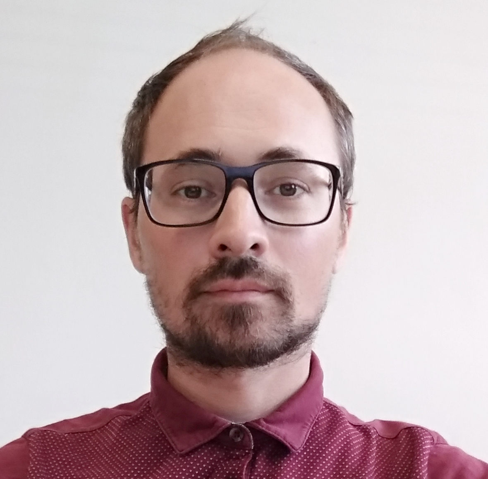

Alessio Ferrari is Research Scientist at Consiglio Nazionale delle Ricerche—Istituto di Scienza e Tecnologie dell’Informazione (CNR-ISTI), Italy. He received a PhD in computer engineering from the University of Florence in 2011.
His research focuses on natural language processing (NLP) applied to requirements engineering, and on empirical studies on requirements elicitation interviews. He is co-author of more than 60 publications in international conferences and journals, including IEEE RE, REFSQ, REJ, EMSE and IEEE Software.
He has been part of the RE PC and ICSE PC, local organisation co-chair of REFSQ'20, and will be PC co-chair of REFSQ'22. He is one of the creators and co-organisers of the NLP4RE workshop, co-located with REFSQ'18-'22, and co-organiser of AIRE'20.